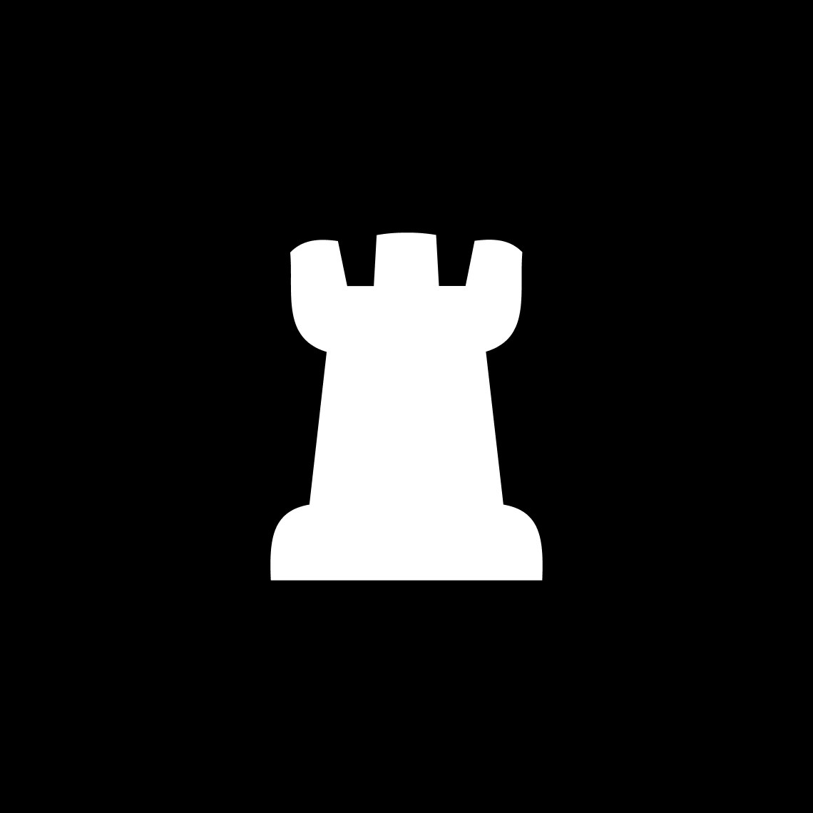

King
The king is the most important piece in the game of chess. It may move to any adjoining square; it may also perform, in tandem with the rook, a special move called castling. If a player's king is threatened with capture, it is said to be in check, and the player must remove the threat of capture immediately.
Queen
The queen is the most powerful piece in the game of chess. It can move any number of squares vertically, horizontally or diagonally, combining the powers of the rook and bishop. Each player starts the game with one queen, placed in the middle of the first rank next to the king.
Pown
The pawn is the most numerous and weakest piece in the game of chess. It may move one square directly forward, it may move two squares directly forward on its first move, and it may capture one square diagonally forward. Each player begins a game with eight pawns, one on each square of their second rank. The white pawns start on a2 through h2; the black pawns start on a7 through h7.

Rock
The rook is a piece in the game of chess.It may move any number of squares horizontally or vertically without jumping, and it may capture an enemy piece on its path; it may participate in castling. Each player starts the game with two rooks, one in each corner on their side of the board.